Actual browser QA — V1.8.6.2.1
상세 보고서 · 생성 이미지/개념도 없음
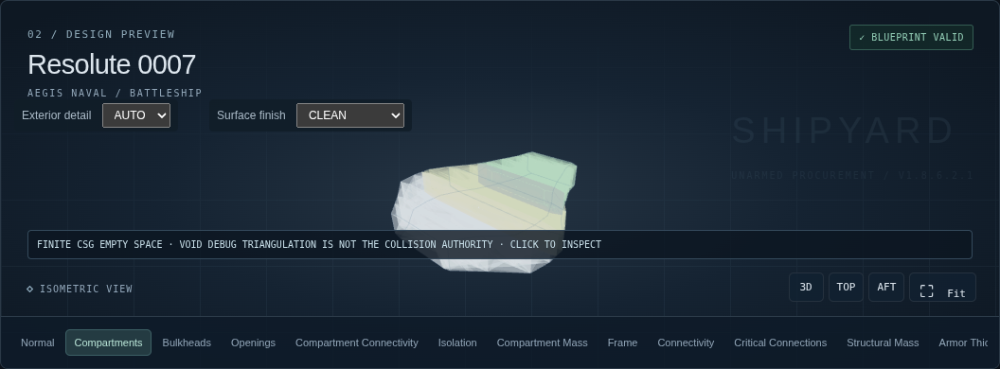
BALANCED — actual Production UI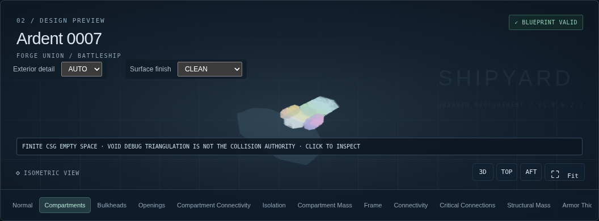
BLOCK_ASSEMBLY — actual Production UI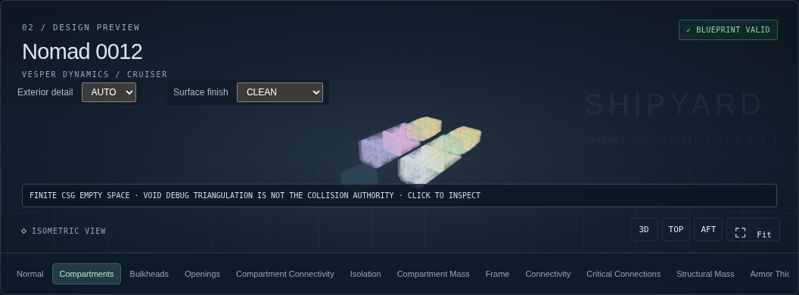
SPINE_AND_MODULES — actual Production UI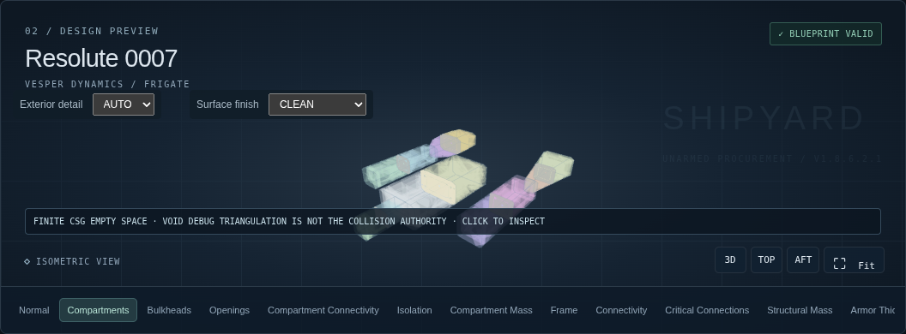
TRUSS_POD — actual Production UI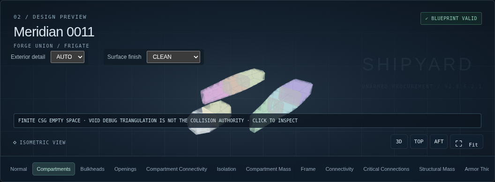
TWIN_HULL — actual Production UI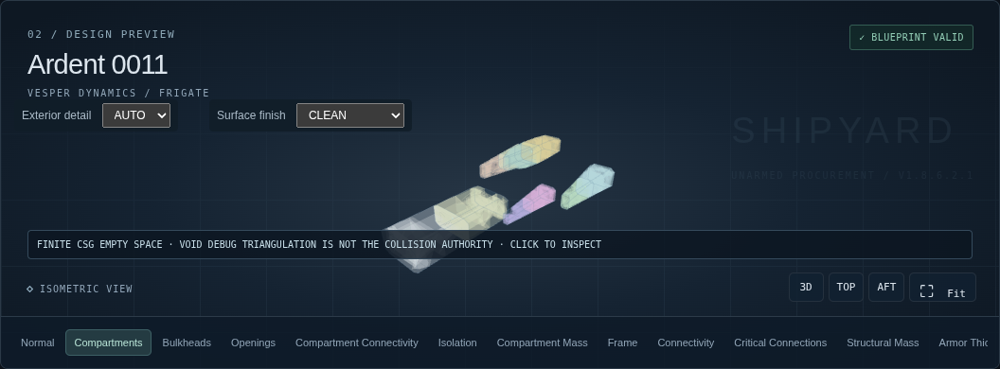
CORE_AND_NACELLES — actual Production UI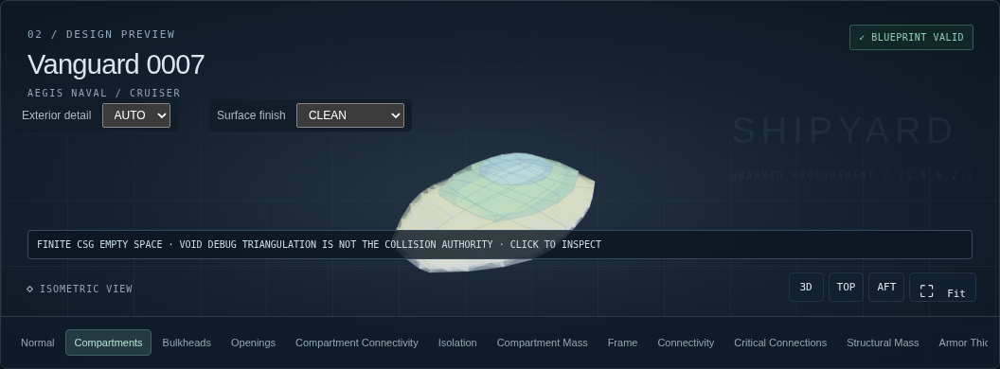
STACKED_BLOCKS — actual Production UI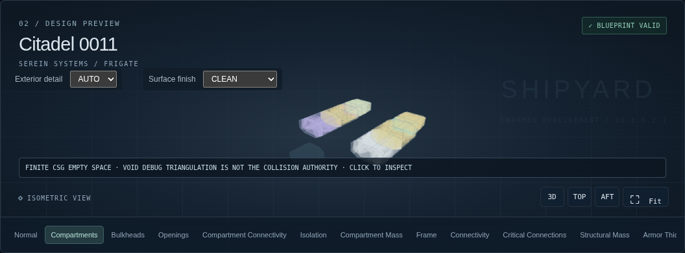
HYBRID — actual Production UI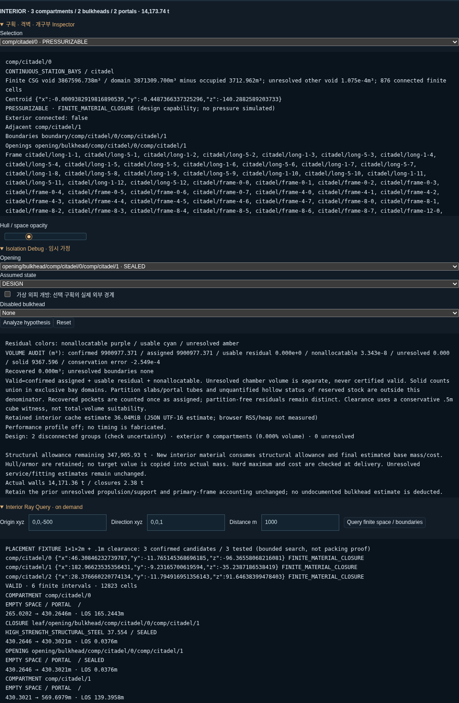
실제 체적/후보 조회 Inspector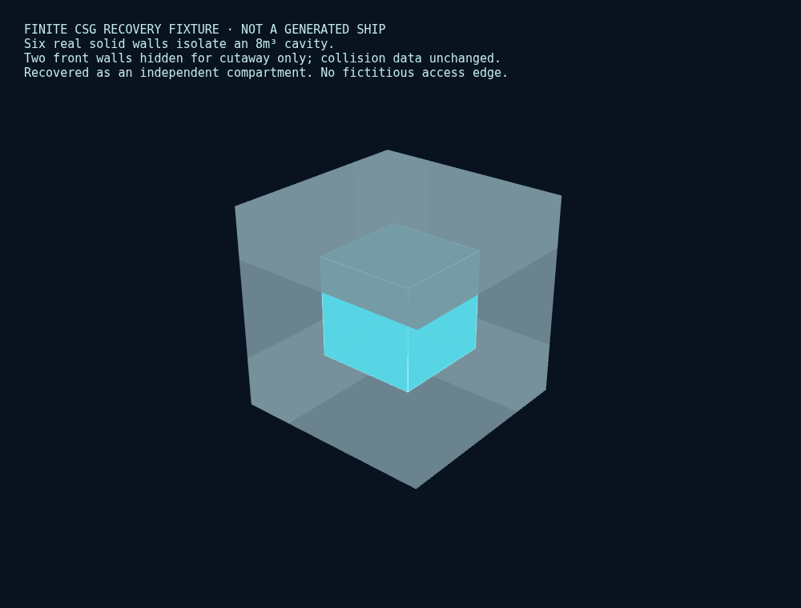
8m³ 실제 유한 CSG 복구 Fixture (함선 아님, 앞쪽 벽 2개는 cutaway 표시)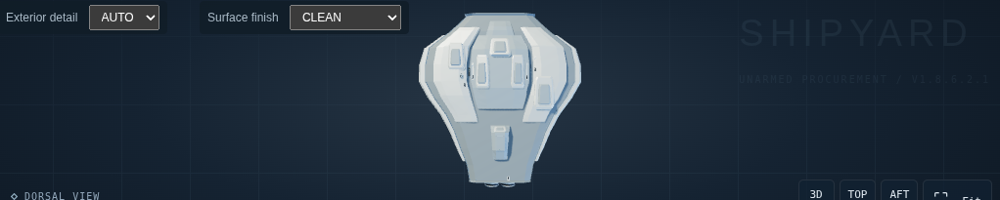
기존 자유 미사일 장착